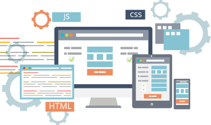
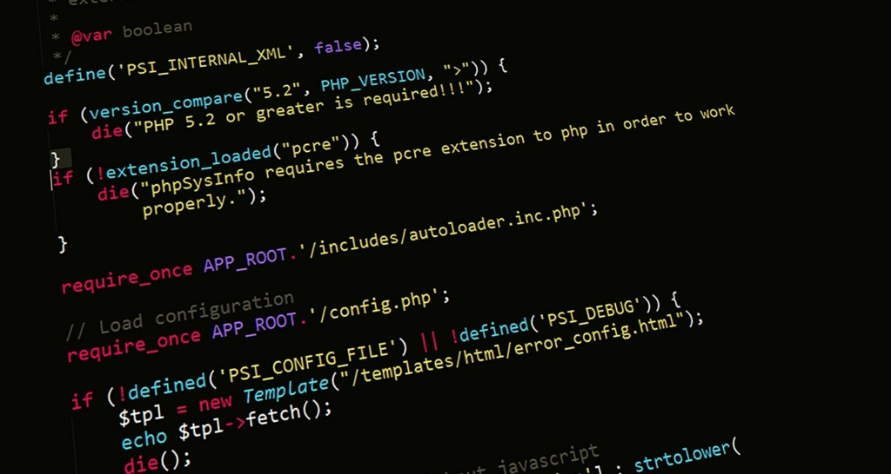

Apresentação
Este site está sendo desenvolvido para auxiliar os alunos do curso de técnico de informática.
Será disponibilizado conteudo básico abordando o Desenvolvimento Web. Com foco em HTML, CSS e JavaScript.
Por onde começar?
O que é client-side e server-side?
Existem dois tipos de linguagens para desenvolvermos para internet: as linguagens client-side e as linguagens server-side. Você pode ver estes nomes meio diferentes em outros lugares como por exemplo, front-end, se referindo às linguagens client-side e back-end se referindo às linguagens server-side. Não se preocupe, são a mesma coisa. Mas nesse texto, para que você possa entender melhor, vamos usar client-side e server-side.
As linguagens server-side são linguagens que o SERVIDOR entende. Isso quer dizer que vai escrever um código onde o servidor vai processá-lo e então vai mandar para o seu navegador a resposta.
As linguagens client-side são linguagens onde apenas o seu NAVEGADOR vai entender. Quem vai processar essa linguagem não é o servidor, mas o seu browser.
Por exemplo: se criarmos um script em linguagem back-end (PHP, Asp, Java, Ruby, etc) que apenas calcula a soma de 2 + 2, será o SERVIDOR (ou back, o server) que calculará este resultado. Se fizermos esse cálculo em alguma linguagem front-end, como o JavaScript, quem calculará essa conta é o BROWSER do usuário. Por isso o termo client ou front.
Assim, os profissionais que trabalham na interface do usuário, são chamados de Desenvolvedores front-end, e aqueles que trabalham no core da aplicação, fazendo uma programação que somente o servidor irá entender são chamados de Desenvolvedores back-end.
Exemplo de Linguagens
Essas linguagens são linguagens client-side. É o que vamos aprender durante todo esse conteúdo:
- HTML (xHTML, HTML4, HTML5...)
- CSS (CSS2.1, CSS3...)
- JavaScript

Essas são linguagens server-side, são as linguagens com que os programadores back-end trabalham:
- PHP
- ASP
- Java
- Python
- Ruby

Clientes e servidores
Computadores conectados à Web são chamados clients e servers. Um diagrama simplificado de como eles interagem parece algo do tipo:

Clientes são os usuários típicos da Web conectados à Internet (por exemplo, seu computador conectado ao seu Wifi, ou seu smartphone conectado à sua rede móvel) e programas de acesso à Web disponíveis nesses aparelhos (geralmente um browser como Firefox ou Chrome).
Servidores são computadores que guardam páginas ou aplicativos. Quando o dispositivo de um cliente quer acessar uma página, uma cópia dela é baixada do servidor à máquina do cliente para ser mostrada no browser.
Quer saber mais?
Acesse os links abaixo